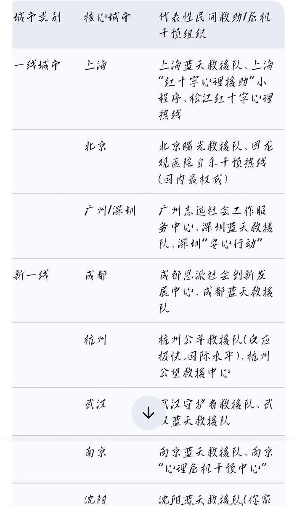

432InfantryRegiment
@432Ifantrygroup
@EmovOoooo 但我不得不跟你说的就是在这件事中你做错的地方在于：不应该指望警察，而是拨打当地的由志愿者组成的救助组织，会更有用。因为在很多紧急时刻，这种完全由志愿者组成的民间组织，比推诿扯皮的官僚机构靠谱得多。我让ai整理了一些，你也许以后会用到

Emo🍥🏳️⚧️💊
@EmovOoooo
@432Ifantrygroup 警察去死吧…等她醒来我就接走她离开那个该死的上海，我就带她一起把尊严赚回来的…